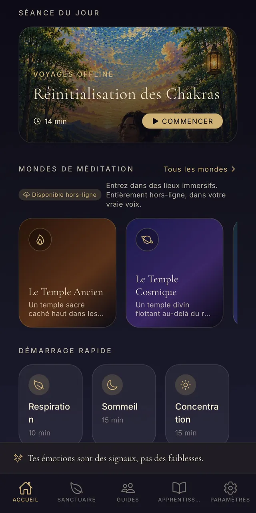
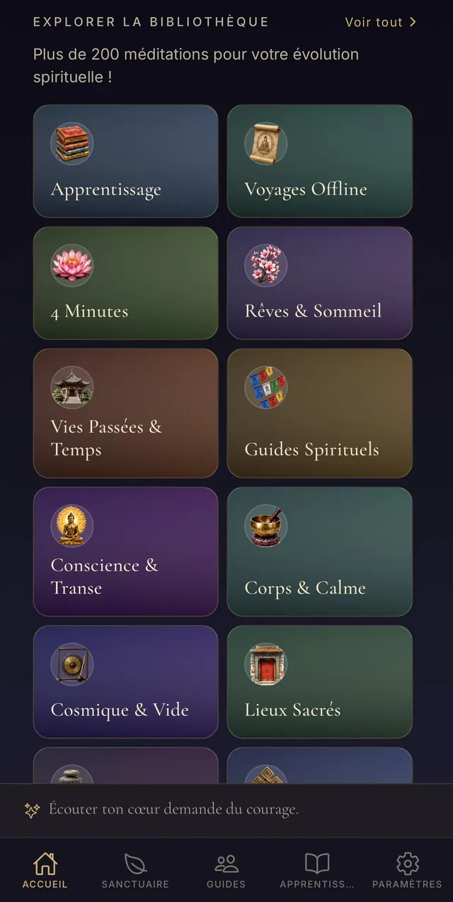
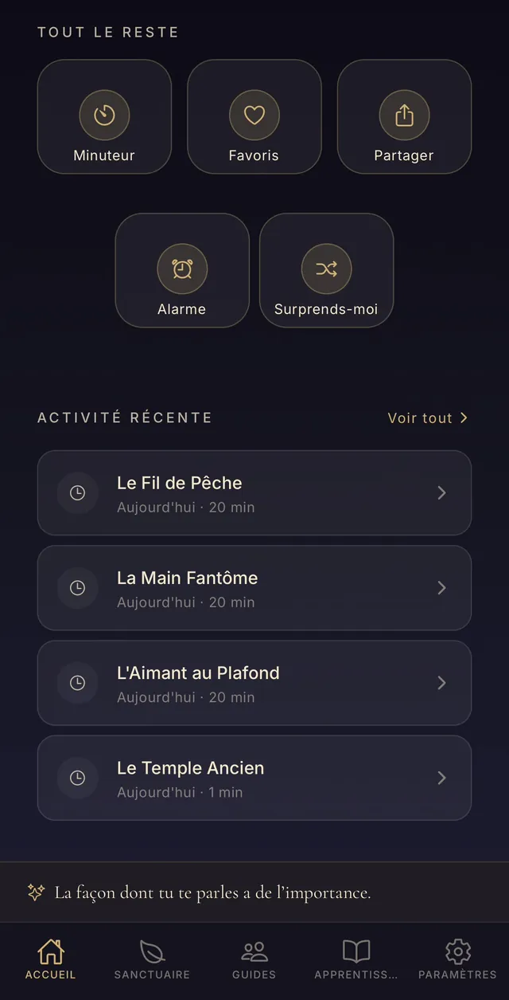
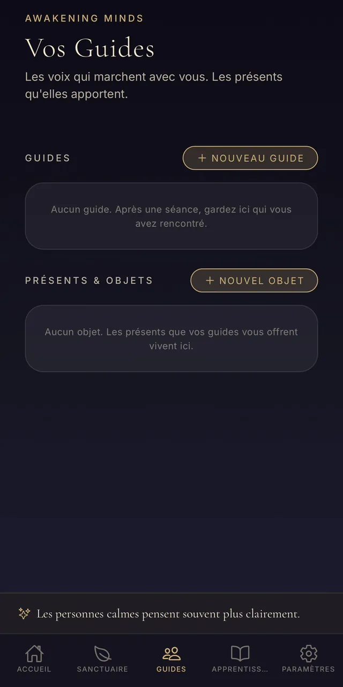
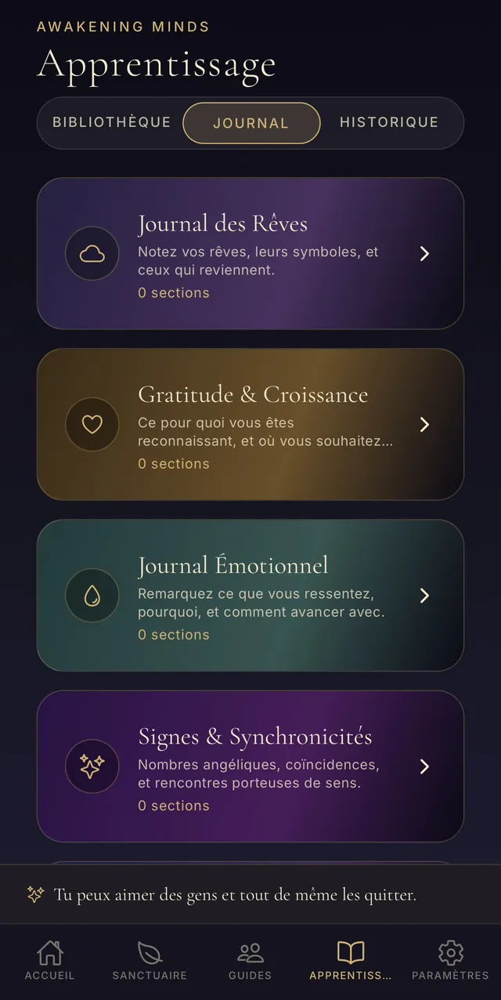
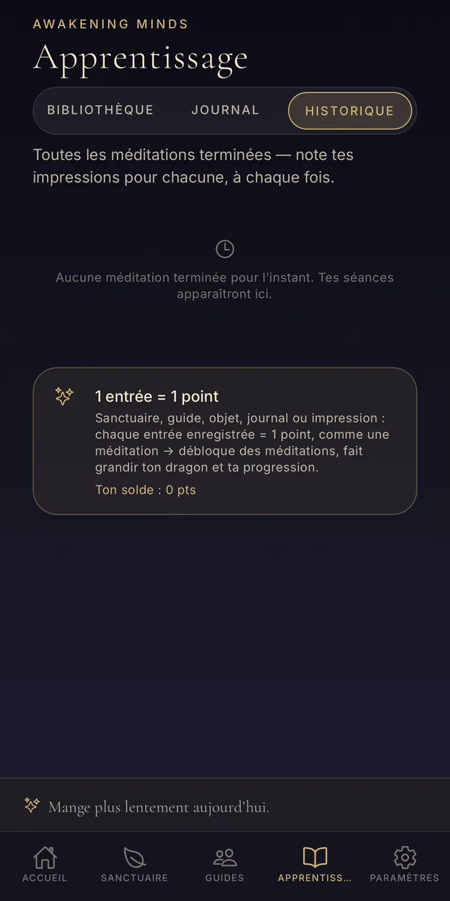
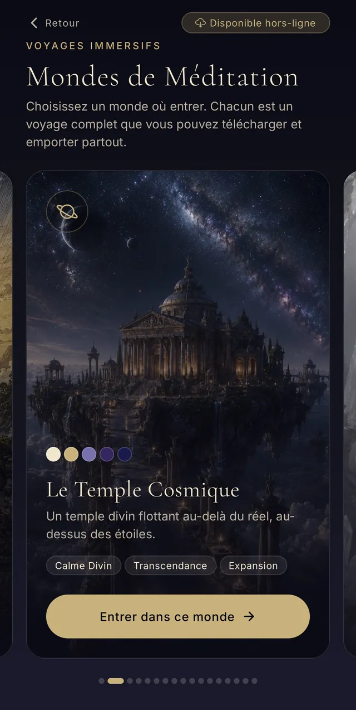
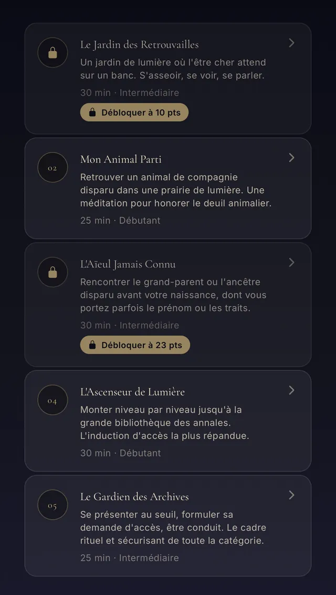
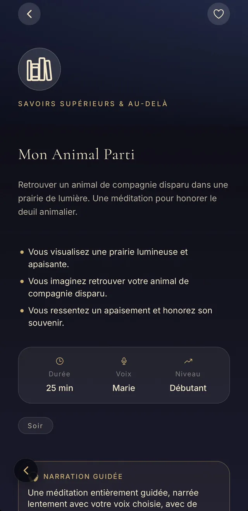
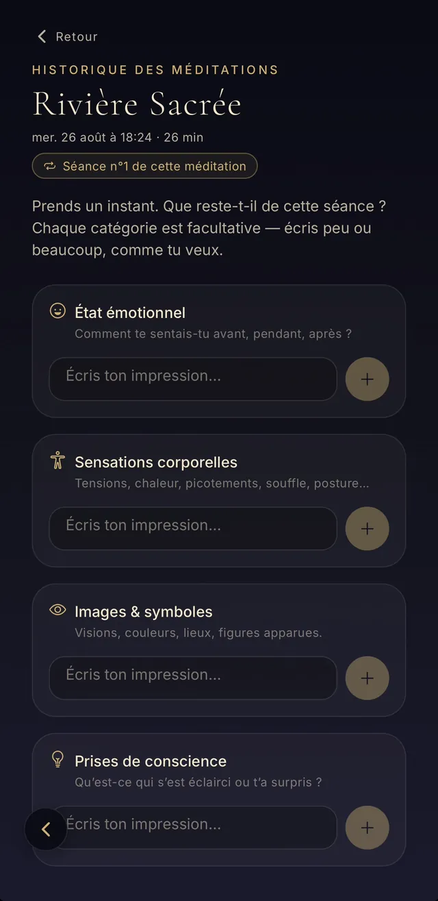

Plus de 195 méditations guidées, 17 mondes immersifs, un compagnon dragon et un journal de ton évolution — sans jamais rien payer.
Apprendre la méditation et soutenir ton développement spirituel. C'est tout. Pas d'abonnement caché, pas de publicité, pas de compte à créer, pas de données collectées : tu ouvres l'app, et tu respires.

Des premiers pas aux explorations les plus profondes. Chaque catégorie est un univers : illustration, voix, ambiance et ton propres.

Dix courtes séances pour poser les fondations : posture, souffle, attention.
10 méditations
Toutes les méditations qui jouent sans internet — respiration, sommeil, ancrage, chakras + toutes les méditations live disponibles dans un lieu au choix (forêt, grotte, montagne, temple, cosmos).
13 méditations
De courtes méditations entièrement hors-ligne — trouvez le calme, recentrez-vous, ou endormez-vous en quatre minutes.
5 méditations
Rêves lucides, sommeil, sens des rêves.
3 méditations
Visitez les vies qui ont précédé celle-ci.
9 méditations
Rencontrez les voix qui marchent avec vous.
13 méditations
Troisième œil, astral, mondes symboliques.
17 méditations
Souffle, chakras, sons, réinitialisation nerveuse.
13 méditations
Voyagez au-delà. Étoiles, vide, l'immensité intérieure.
9 méditations
Temples, forêts, montagnes, océans, feu.
18 méditations
Rencontrez ce dont vous vous êtes détourné, avec douceur.
12 méditations
Retrouvailles, mémoires transgénérationnelles, accès aux annales : le voyage vers ce qui nous dépasse.
5 méditations
Voyages aux mondes d'en bas, d'en haut, du milieu. Animal de pouvoir, âme des lieux, chaudron celte.
6 méditations
Calmer l'anxiété, les tensions, l'agitation mentale, mieux dormir.
10 méditations
Amour, gratitude, compassion, pardon — cultiver le cœur intérieur.
10 méditations
Aller à la rencontre de la peur avec les techniques des experts : RAIN, pendulation somatique, auto-compassion, défusion cognitive.
8 méditationsTrois catégories dédiées aux techniques de transe, au micro-détachement et aux voyages astraux — pour les explorateurs.
5 exercices préparatoires basés sur l'hypnose ericksonienne, la relaxation fractionnée de Monroe, et la visualisation progressive : descente en transe, induction fractionnée, écran mental, sens subtils, visualisation par paliers.
5 méditations8 micro-gestes de séparation à pratiquer AVANT toute sortie complète : sortir juste une main fantôme, se laisser tirer par un aimant imaginaire, glisser dans un toboggan mental, se désaligner de 2 centimètres. Idéal pour les débutants qui figent.
8 méditations10 techniques classiques (corde, roulement, rotation, vortex...) + 11 protocoles avancés (double, target, miroir, cartographie, protocole des premiers mètres). Chaque séance se termine en silence — vous restez dans l'état.
21 méditationsUn monde = un voyage complet (4, 10 ou 20 minutes), avec son décor, sa lumière, ses sons et son récit. Tu choisis où entrer.

Un temple sacré caché haut dans les montagnes brumeuses.

Un temple divin flottant au-delà du réel, au-dessus des étoiles.

Un monde de cristal lumineux et sans fin, loin sous terre.

Flottez paisiblement à travers l’espace cosmique profond.

Un monde caché au plus profond de la Terre.

Un ancien sanctuaire extraterrestre sous la glace antarctique.

Une île tropicale paisible flottant au-dessus des nuages.

Un jardin japonais traditionnel d’un calme parfait.

Une civilisation sous-marine perdue d’une sérénité profonde.

Un monastère sacré haut dans les montagnes, à l’aube.

Une bibliothèque infinie flottant au-delà du réel.

Une oasis mystique sous un ciel de désert rempli d’étoiles.

Un arbre sacré immense, relié à toute la vie.

Une ancienne cité perdue, reprise par la jungle.

Une forêt onirique et lumineuse.

Un royaume réfléchissant de conscience infinie.

Une forêt au clair de lune, gardée par d’anciens esprits loups.
Avant certaines méditations, tu choisis le décor où la voix t'emmène. Le thème de la séance est tissé à travers les sensations du lieu.

Racines, mousse, sentier caché

Descente vers l'invisible

Air pur, vaste horizon

Encens, seuil, silence

Sans poids, vaste, vivant
Au-delà des méditations, l'app devient peu à peu ton carnet de route intérieur.
Crée tes lieux intérieurs — forêt, grotte, temple, île… — et reviens y méditer.
Note les guides rencontrés en méditation : leur type, leurs messages, leurs réapparitions.
Les objets reçus en voyage intérieur, gardés et décrits, avec leur sens pour toi.
Un journal personnel structuré : rêves, gratitude, émotions, signes… et un historique de chaque méditation avec tes impressions.
Ton compagnon grandit avec ta pratique (11 stades), et son île évolue avec lui — rocher, prairie, arbre, cascade, cristal, temple, cosmos.
Des tampons à collectionner : méditations, mondes, guides, séries, badges d'assiduité.
Un conseil du jour adapté à ton heure, ta régularité et ton programme personnel issu du questionnaire d'accueil.
1 méditation = 1 point, 1 entrée = 1 point. La moitié de chaque catégorie est libre dès le départ ; tout est ouvert à 30 points.
Trouve une méditation par mot-clé — sommeil, stress, confiance, enfant intérieur, chakra…
Un doux rappel quotidien ou certains jours seulement, à l'heure que tu veux.
Six crans, de 0,75× à 1×, hauteur préservée. Et un rythme personnel pour les pauses entre les phrases.
Pluie, forêt, bol tibétain… un fond sonore pendant la séance, à ton volume.
Une bibliothèque illustrée pour débuter : postures, souffle, attention, respiration, avec des schémas dans ta langue.
Télécharge tes méditations et tes mondes : ils jouent sans réseau, pour toujours.
Fais défiler pour parcourir l’application, telle qu’elle est sur ton téléphone.


















Un aperçu de l’application en quelques minutes.
Gratuite sur l’App Store et Google Play. Aucune inscription, aucun abonnement : tu installes, et tu respires.
Awakening Minds est un outil d'apprentissage et de bien-être. Il ne constitue ni un avis médical, ni un diagnostic, ni un traitement, et ne remplace jamais l'accompagnement d'un professionnel.